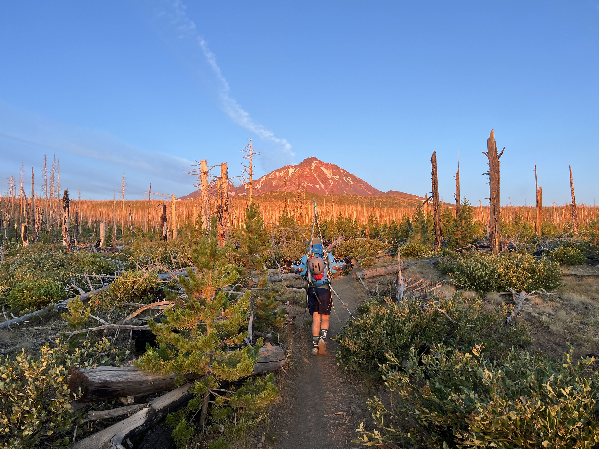
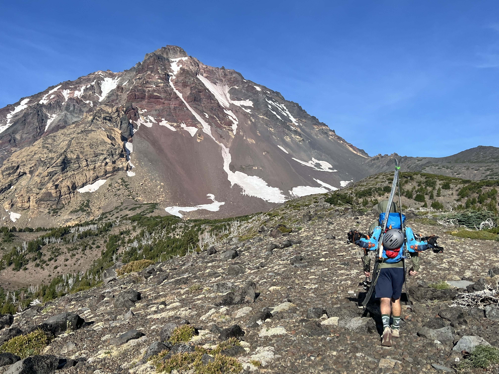
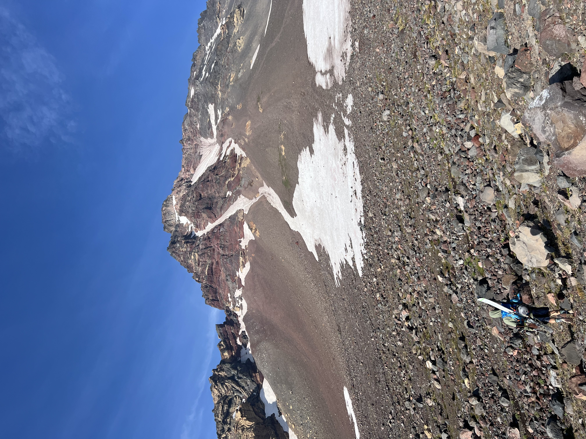
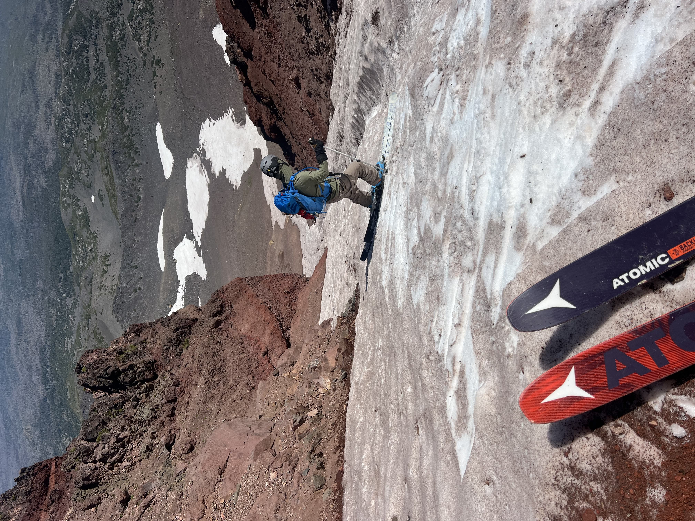

Early Morning Couloir - Skiing in August


Background
If you live in the central Willamette valley and you like rock and snow, you’ll be spending a lot of time driving to and from the Oregon cascades. Being one of those people myself, I’ve taken Highway 20 from Sisters to Bend countless times. Inevitably, as the road cuts through open fields that provide of view the Western horizon, my eyes are locked onto the Three Sisters. And there’s one line that stands out every time.
Early Morning Couloir is probably North Sister’s most well known descent and one of Oregon’s more popular couloirs.
I’ve known about it for quite some time, and I’ve seriously wanted to give it a go for probably six months, but sadly just never got around to it. It’s quite a long drive from where I live, and there’s lots of other objectives on the way that are much closer and very much worth doing as well.
Regardless, I knew I had to get around to it eventually, I just didn’t think it would be in mid August that I would make my attempt…
GPS tracks
For those who want to download our GPS tracks, click here. Or View them below. (Putting this here mostly for approach beta, GPS went a bit crazy in the couloir…)
The route!
Starting off with some stats, our adventure totaled up to:
- 11.5 miles, of which 6.0 were on trail
- 4,108 ft of vertical gain
- 8 hours and 48 minutes car-to-car

After a short night of sleep in the Pole Creek trailhead parking lot, we got up at 5am and started throwing out gear together. Keeping it simple, I packed no skins. Just boots, skis, helmet, crampons, a Petzl Ride, one regular pole and one BD Whippet. We were on the trail by 5:55am, and heading up towards our objective.
After 1.4 miles South on Pole creek, and 1.6 miles North on Green Lakes trail, we decided the bushwhack to our left looked good enough where we were, so we took our chances and split off right there. Walking through the Manzanita and over downed trees, we followed a faint ridge that seemed to be pointing us in the right direction.
Topping out on this ridge gave us an amazing view of our line and a clear tree-less path to the bottom of North sister. Once we were here we could spot a couple tracks on the super wide lower part of the snowpack, and only one set of tracks that went a little higher than the rest. It seemed no one had gone up more than 50 vertical feet into the couloir.
From this viewpoint we discussed how far up the couloir we thought we could make it, and if there would be too many rocks in the snowpack to avoid a ding to our bases. Oh well, “Tools not jewels” right?

After hopping across some talus to the base of the snow, we kept our trail runners on for the first ten minutes of traveling up the snow. Once we reached a point where there was more slipping backwards that walking forwards, we transitioned to boots and crampons.
From here on out, we chatted and gradually made our way up the steepening snow. In a somewhat vain effort to save our skis, we cleared rocks by throwing them off the snow as we climbed.
The snow quickly made its way from a flat 5° or 10° gradient at the very bottom to a consistent 40° or 45° once you enter the couloir. Thankfully, this meant that it was too steep for any rocks to stay in the snow, and the couloir itself was clear of debris.
We saw close to no rockfall as we booted up. The occasional ping pong sized rock would fall down onto the edge of the snow every 20 minutes, but nothing too concerning.
After 1 hour and 20 minutes of boot packing, we had reached a flat and protected snow ledge at 9,200ft elevation. From earlier we had seen that not too far above this the snow in the couloir was separated by a small cliff/rock band that would make skiing down impossible.
I decided to call it a day and ski down from this ledge. It was a great transition location and there wasn’t much extra skiing above to be had and I saw no place to transition easily. My partner decided he wanted to start from higher, so I told him to go ahead and I would be ready to start skiing when he came back down to me.
As I watch him climb up and around the corner out of sight, I sit on a rock and wait in silence. Silence that was interrupted by a faint scream, “Ski!!! Ski!!“. I looked up waiting to see one of his skis come barreling down towards me, but a couple seconds later he screams again. “Rock!! Rock!!”, this time I’m not waiting around to watch. I jump under the overhung formation of snow and rock that created my little ledge and waited to see the little balls of death fly by. And fly by they did.
After waiting a safe amount of time, I step out again to see if I can stop I’m him. He yells at me asking if I’m okay and I respond back that I’m safe from rockfall where I am. He says he can’t transition where he his, and he’s going to down climb back to me. One short moment later and again. “Rock!! Rock!! From above me!”, this time I jump in my hiding cave and pull out my phone for a video. I know I’ve got about 15 seconds before gravity brings me a couple high speed gifts.
I miss the first couple that whizz by like bullets, but capture the second round of projectiles. Sadly, the rock that I had used as my chair for the past 15 minutes did not survive the barrage. I’m not a medical professional, but I think I can safely say I would have had pretty bad day if I had still been sitting on it.
A few moments later, I hear my parter yell again to make sure I’m still alive, and I confirm I’m all good. One last time, he starts moving again and this time makes it all the way back down to my little protected snow ledge. From here we have a quick snack and a nervous laugh looking at the video I took, before getting our skis ready for the descent. We both agree to not dilly dally too long in the upper section of our descent where there’s no good place to hide from rockfall.
The descent was definitely not a champagne pow dream lap, but it was still a blast. Rock hard firm snow was covered by a layer of one or two inches of soft loose slightly wet snow. This gave edges plenty to grip and enough wet snow on the surface to be able to side slip when needed.
Tight jump turns made a fun descent of the upper section of the descent, mostly ~45° snow. Some small sections were steeper because of sun cups, little 5 foot tall sections of 50° or 60°. Overall a great descent for August, as good as we could have hoped for.
Steep skiing turned into a long flat exit on the last remains of the snowfield on top of the scree. Of course this whole ordeal was spent dodging potential coreshots from hundreds of tennis ball sized rocks.
To exit, we simply followed our path in. Dodging white bark pines in the alpine and romping around manzanita bushes through the burn zone, we were brought back to the Green lakes trail. Finally, an hour of brisk hiking and good conversation and we found ourselves once again at the trailhead.
All in all a great day and we were back well before dinner.